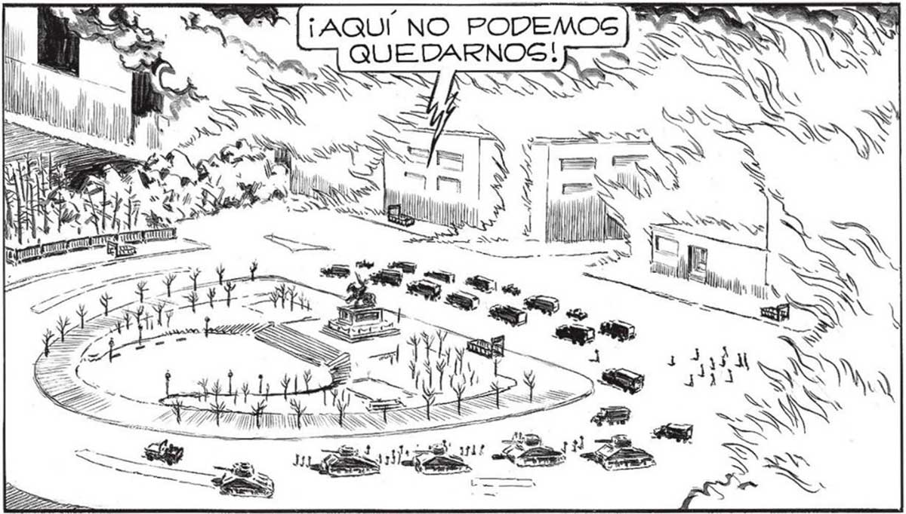

198 .. ENTRE LOGS ESCOMBROS...SIN QUE NINGUNO DE NOSOTROS PuDIERA e NADA. ¡ES ESPANGO! == XS AHORA NO NOS QUEDA OTRA ALTERNATIVA QUE SEGUIR POR LAS HERAS... HACER LO QUE ELLOS QUIEREN... SÑGE DIRÍA QUE ESTAN RE_(SANDO TODO_CON UN GSU-] PER _ y as Uña 7 Ud "AÑ ve a UN pos > N NS - WN e Ss A ¿MYZA == e | " Pa v m SON MUCHAS LAS PERDIDAS QUE HEMOS SUFRIDO..PERO QUIZA NINGUNA TAN GRAVE COMO ESTA..EL PROFESOR FAVALLI SABÍA MUCHO MAS QUE NINGUNO DE NOSOTROS... Y EL TENÍA RAZON.. ÁAALIMENTANDOSE CON CUALQUIER COGA, TANTO CON MADERAS COMO CON BALDOGAG, EL INCENDIO SEGUÍA EXTENDIÉNDOSE, CERCAÁNDONOS CASI... POBRE FAYA.. ACABAR ASÍ... ¡ MIRE, SEÑOR GALVO!¡LAS LLAMAS! de is Nr SN PE y SS io: H ó 3 AHORA LO VEO CLARO. COMO LO VEÍA ÉL..NO CABE DUDA QUE NOS TRAJERON A UNA TRAMPA: ACABAN DE BLOQUEARNOS LA ÚNICA VÍA DE ESCAPE QUE a VZ, TENÍAMOS... Ww" =.Í na Le — === LAS LLAMAS... LA CATASGSTROFE DEL EDIFICIO ME LAS HABÍA HECHO OlLVIDAR... AQUELLAS LLAMAS QUE GE ACERCABAN POR LOS TECHOS... dá ES ER 4 Z E O ÓN NE amare TRATABAMOG DE ESCAPAR DEL EDIFICIO, LAS LLAMAS HABAN SEGUIDO AVANZANDO... AHORA CORONABAN LOG EDIFICIOS... SEGUIREMOS AVANZANDO POR LAS HERAS... ¡ PRONTO! ¡AQUÍ NO PODEMOS ]" QUEDARNOG! all o Bol MEN | li, O NS 4 SN
